Vexor Documentation
Starting with Vexor
Registration
In order to start using Vexor you should have a GitHub or BitBucket account.
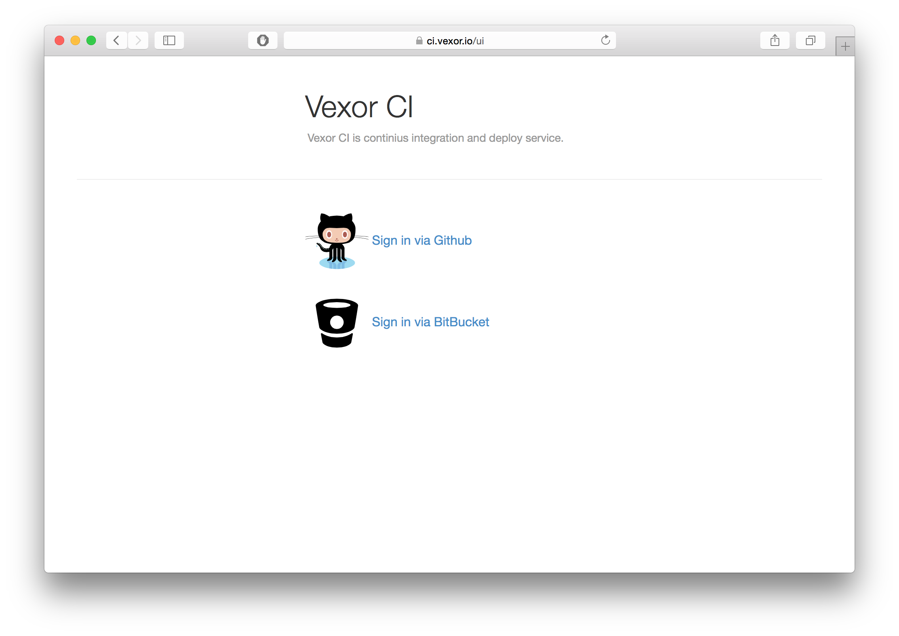
Vexor supports 3 popular source control providers: GitHub, BitBucket and GitLab. No matter which one you've signed up with, you can always connect another, as well as update your email address and name, on the Profile Settings page.
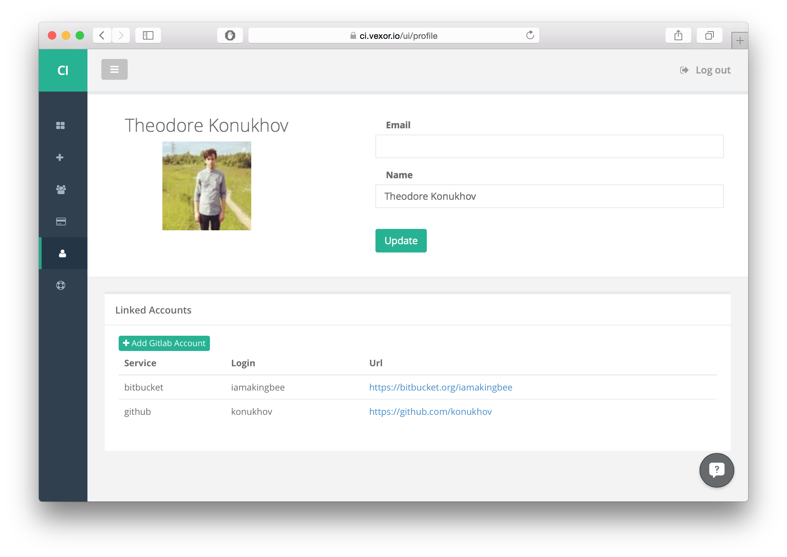
Team settings
Collaborators can be invited to your team on the "Users" page. Each user can be assigned with a role Admin or Developer. Developers cannot remove projects and users to the team.
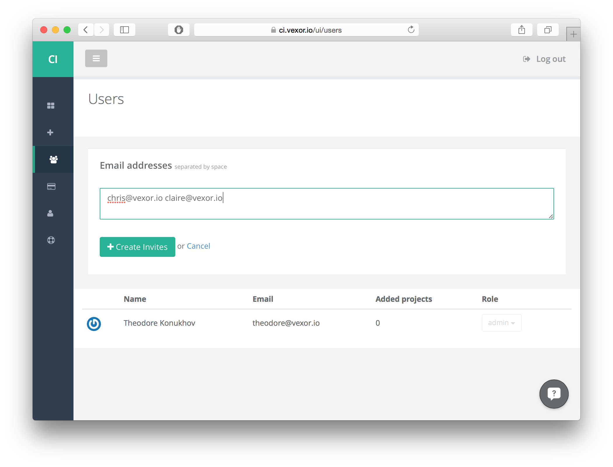
Adding a project
There's a list of all repos imported from your connected accounts in the "Add project" section.
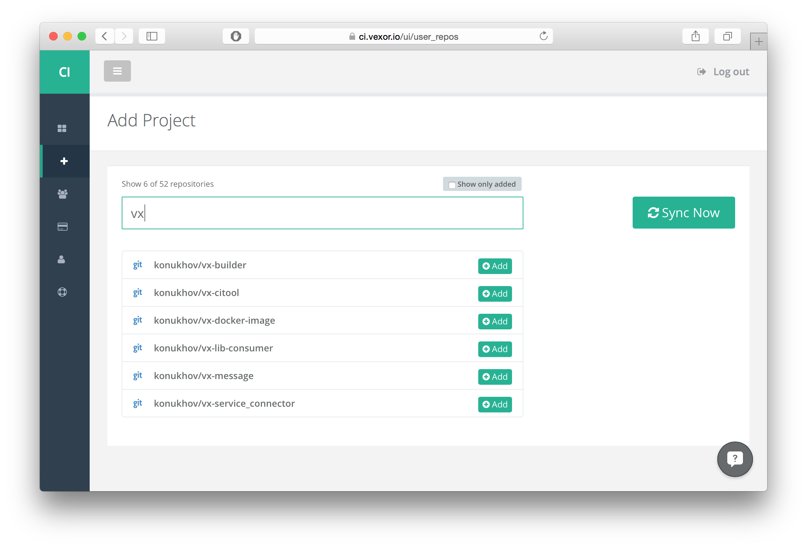
To add a project and make a first build just press "Add". You'll be asked to specify a project's language while adding.
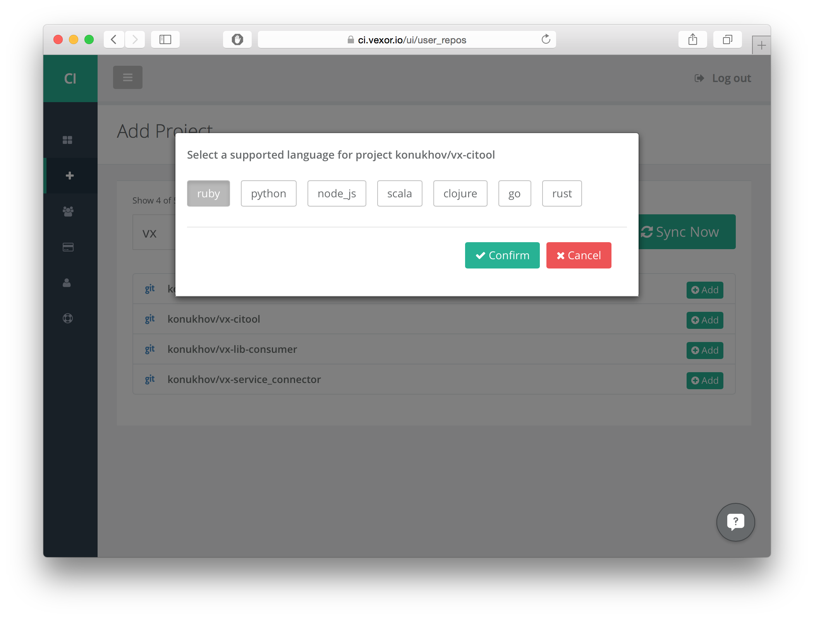
Then you'll be redirected to the freshly added project.
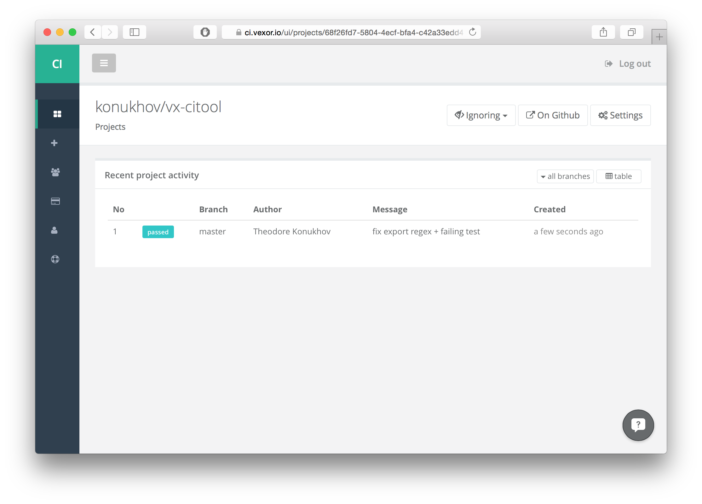
Project notification settings
You can choose on which occasions you will be notified about your project's buildsstatuses. There're three available options:
- Watching (default): Get an email after each build is completed whther it's failed or succeeded.
- Not watching: Get an email only if a build was initiated by your commit or pull request.
- Ignoring: Don't get any emails about this project.
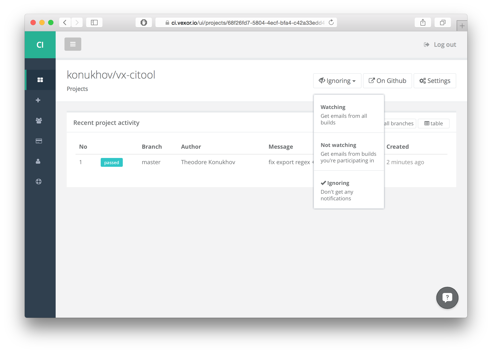
Project settings
Secure env variables, SSH keys, build restrictions etc. can be configures on project's "Settings" page.
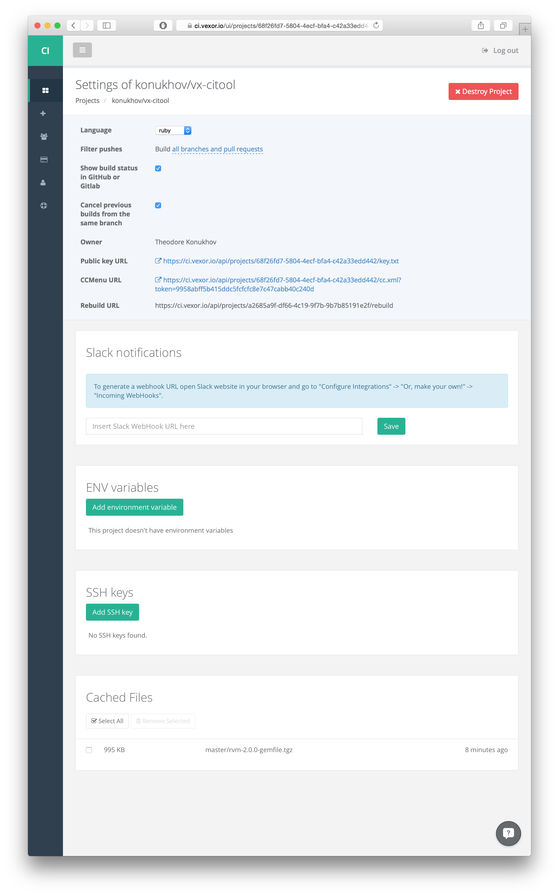
Choosing project's language
Project's language can be changed here.
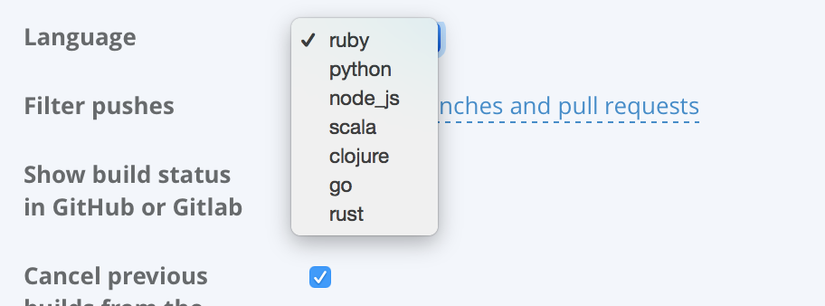
Configuring build restrictions
You can specify which branches you want to be built by a regular expression in the "Filter pushes" popup.
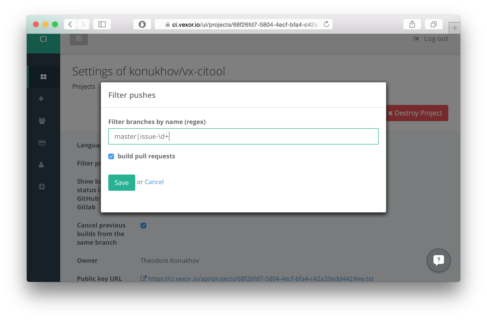
We don't build pull requests from the same repo by default, because builds are already initiated by pushes to a repo. This behavior can be changed by clicking on a "Build pull requests" checkbox (e.g. if you have filtered some branches but want to build all PRs). Pull requests from foreign repos are being built always, whether "Build pull requests" checkbox is on or not.
Configuring build statuses on GitHub or GitLab (no BitBucket, sorry)
Build statuses shown in pull requests could be configured here. Enabled by default.
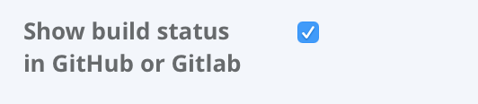
Canceling running builds after a push to the same branch
You might want ongoing builds to get cancelled after a push to the same branch. Enabled by default.
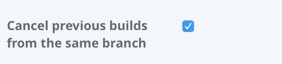
Configuring Slack notifications
Vexor can send build notifications to Slack channels. To enable this feature you should create an incoming webhook on the Slack integrations page and paste it to the "slack" section of the Vexor project settings page.
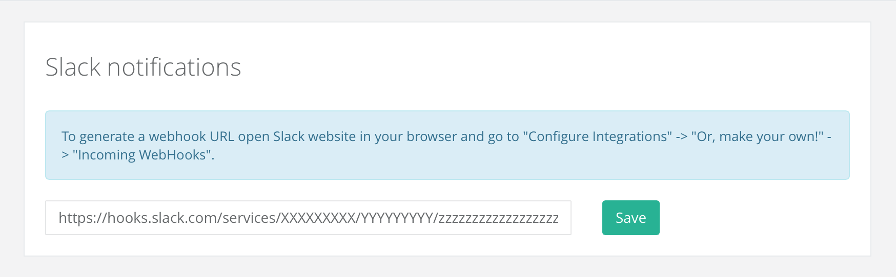
Securing environment variables
You can add secure environment variables to your project (e.g. Heroku tokens, Code Climate keys, etc.). Note that env-vars which don't have to be secure could also be added via .vexor.yml config file.
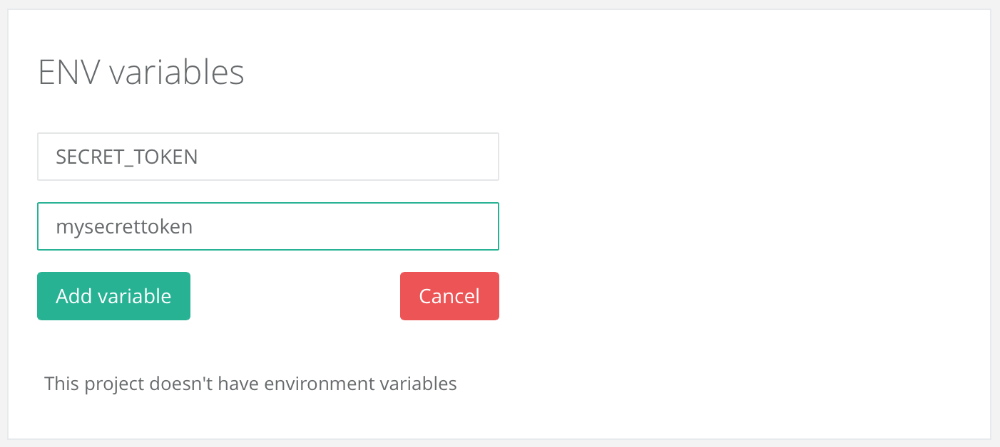
Adding SSH keys
Additional SSH keys can also be added through the interface. Note that you might want to keep keys in a particular order. User-added SSH keys are being added to the agent before the project's deploy key, ordered from most recent to earliest.
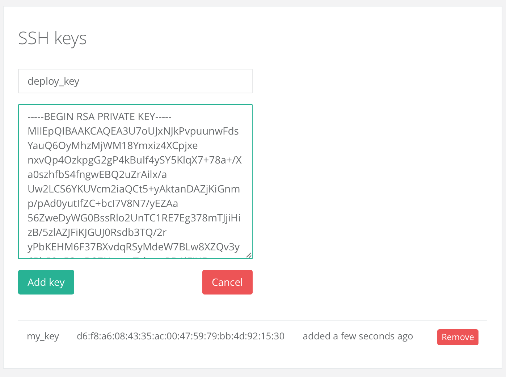
Vexor config file
Project's config should be stored in vexor.yml (.vexor.yml works too) file in a root directory. For those who are migrating from Travis it is possible to use .travis.yml file but it's recommended to switch to vexor.yml config, because Vexor is not fully compatible with Travis and uses slightly different configuration options.
Available configuration keys
Common options
-
language string
Specify a language so Vexor could run language-specific preparations for your project. If you don't have a Vexor config included in your repo's root, a default config will be used, which has only the
languagekey based on a language you've chosen when added a repo to Vexor. If config file is empty, without language specified, your build won't we able to run.Example:
language: ruby -
env map
Set up your environment variables here. For secure env-vars see Configuring project ENV variables section. Environment config consists of three sections:
global,excludeandmatrix.Global
A list of global environment variables exported into the system.
env: global: - VAR1=some_stuff - VAR2="i'm a var with spaces"
Matrix
A list of martix-specific variables. For each variable there will be one job started with this var + all vars from
globalsection exported. See Parallelism for better matrix understanding.env: martix: - SCRIPT=script_for_one_job - SCRIPT=script_for_another_job
Exclude
Soon
Full example
env: global: - RAILS_ENV=test - DATABASE_URL=postgresql://postgres@herokupgserver.com/my_database matrix: - SCRIPT="bundle exec rspec" - SCRIPT="bundle exec brakeman" - SCRIPT="bundle exec rubocop"
-
before_install array
A list of commands called before installation stage.
before_install: - echo called before installing any dependencies - ... etc.
-
install array
By default we install a number of packages depending on a language specified at the beginning of your config file, including a language binary itself. Use this option to override this behavior.
install: - sudo apt-get install -y ruby-build rbenv - rbenv install 2.1.2 - gem install bundler - ... etc.
-
database array
A list of database-related configuration.
We already have Postgresql 9.3 (with postgres-contrib), MySQL 5.6, MongoDB 2.6.5 and Redis 2.8.5 installed in containers.
Using PostgreSQL
Postgres starts automatically in containers. Use
postgresuser to execute psql command.database: - psql -U postgres -c "create database test;"
Using MySQL
MySQL is already running by default in containers. Use
rootuser to call mysql queries.database: – mysql -u root -e "create database test;"
Notice for Rails users: by default we're already running all necessary database configuration to get Rails tests working so in most cases you don't have to write any database configuration at all. Use
databaseconfig only if you want to override this behavior. -
before_script array
A list of commands called after installation and database stages but before running tests. Usually it's used to install additional dependencies when the system's environment's already configured (e.g you need to install additional gems etc.)
before_script: - sudo npm install bower - sudo gem install brakeman
-
services array
Additional services you want to run in your container. For each specified service there will be
sudo service #{specified_service} startcommand executed. Here you can see which services are already present in our image.Note: There's an alias for
rabbitmq-server. You could simply writerabbitmq.services: - rabbitmq - redis-server
-
script string
You can override a command which runs tests. This might be useful together with
matrixwhen you want to run your test in parallel.script: bundle exec rspec -
chdir string Your project's working directory. By default it's set to your repo's root directory (which is
~/vexor_org_name/project_name).chdir: ~ -
timeout int Job's maximum running time in seconds. Default is 1 hour.
timeout: 1800 -
read_timeout int
If there wasn't any output within the read timeout (in seconds) a job will be shut down.
read_timeout: 60 -
cache boolean
Enable/disable dependencies caching.
Trueby default.cache: false
Each of these keys usually gets a list of language versions which you want to run tests against. If you specified env:matrix, there will be versions_num * martix_size jobs. See Paralleism for better understanding.
- rvm array
- go array
- jdk array
- scala array
- node_js array
- python array
Example:
rvm:
- 1.9.3
- 2.0.0-p0
- 2.1.1Cancelling and restarting a build
Cancel a build
You can cancel any build by clicking a "Stop" button on a build page. A particular job cannot be stopped.
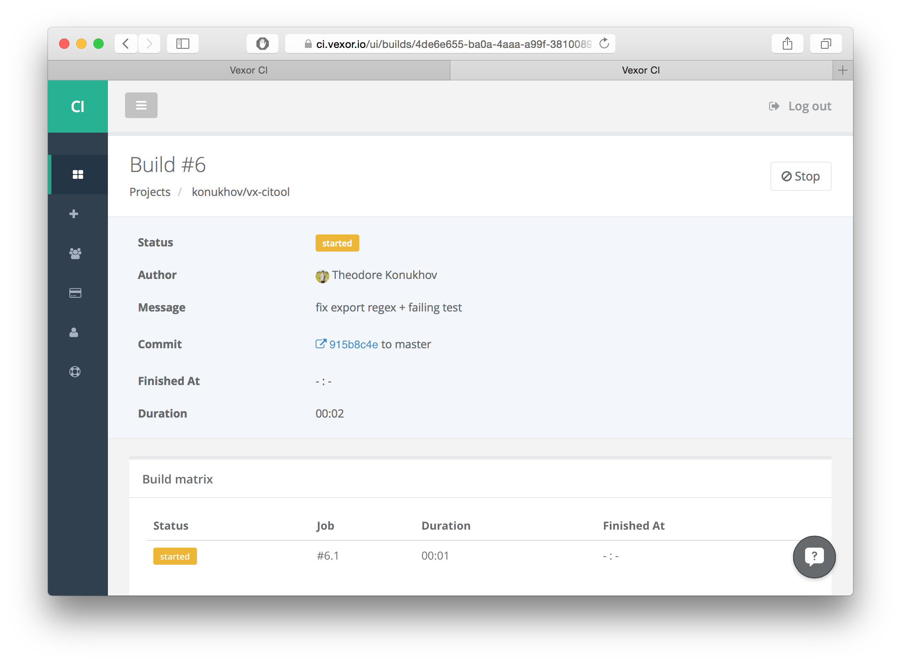
Restart a build
Any finished build can be restarted.
If you want to restart a build without changing any build configuration, just click a "Rebuild" button on a build page.
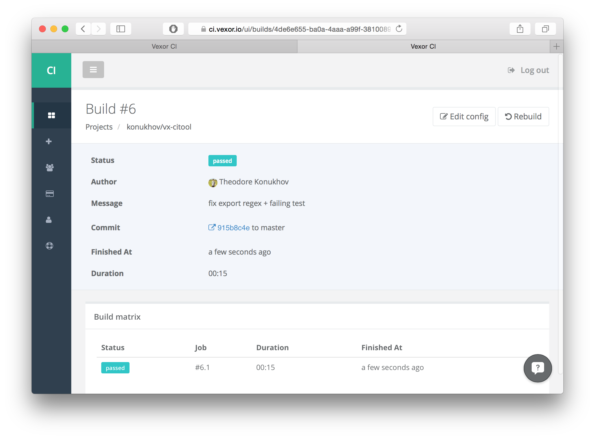
In case you want to quickly test some configuration options out without commiting every vexor.yml change to a repo, you can use "Edit config" feature. Click "Edit config" button on a build page, modify your configuration and then click "Rebuild with new config" button. A new build will be created.
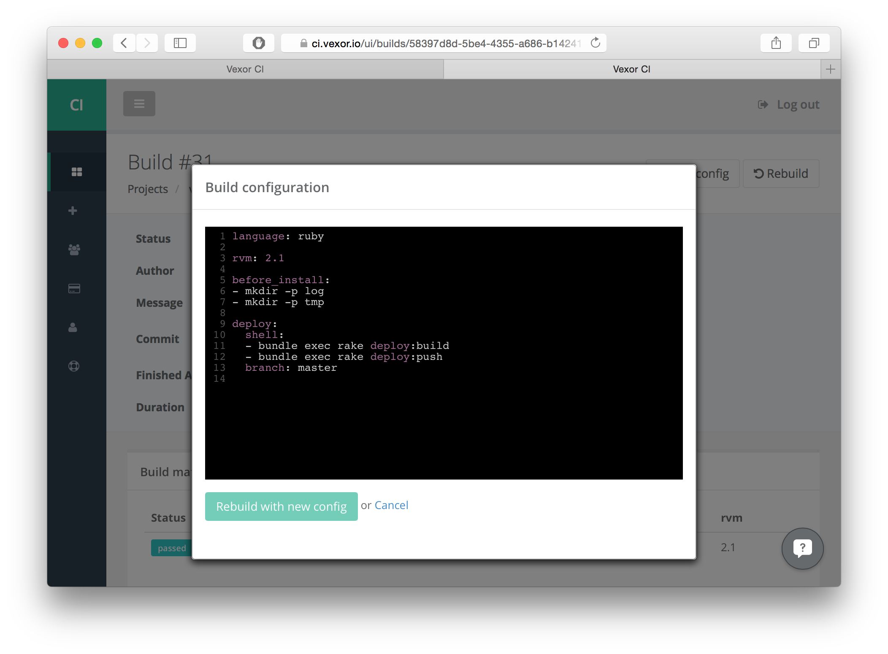
Parallelism
One of the Vexor's main advantages is that it can run an unlimited amount of jobs in parallel. There're several ways to set up parallelim.
Running tests in parallel against different language versions.
You can specify different language versions (see Language versions for details) in vexor.yml config file. For each version there will be a job started.
Example:
Config:
rvm:
- 2.1.0
- 2.0.0
- 1.9.3
- rbx-2Result:
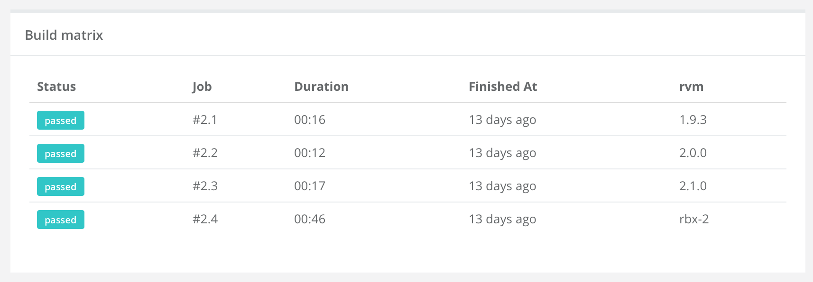
Running different scripts for each job.
Parallel jobs can also be configured via env:matrix key in vexor.yml file. The basic idea is that you specify a script which depends on an environment variable and assign different values to this variable in the matrix section of a config file. Here's an example of how we're using this aproach to build the Vexor web app:
env:
matrix:
- PROJECT=backend
- PROJECT=frontend
script: bundle exec rake test:${PROJECT}And here's a resulting build:
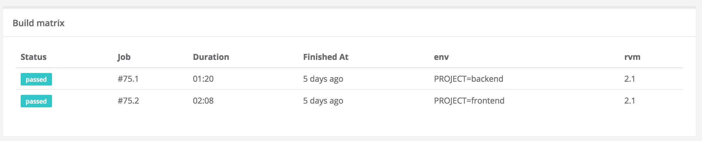
Here's another example of how to use matrix for build parallelization. We're gonna run Rspec, check security with Brakeman, check code quality with Rubocop and check our coffee, scss and haml files.
env:
matrix:
- BUILD_CMD='rspec'
- BUILD_CMD='rubocop'
- BUILD_CMD='brakeman -z'
script: bundle exec ${BUILD_CMD}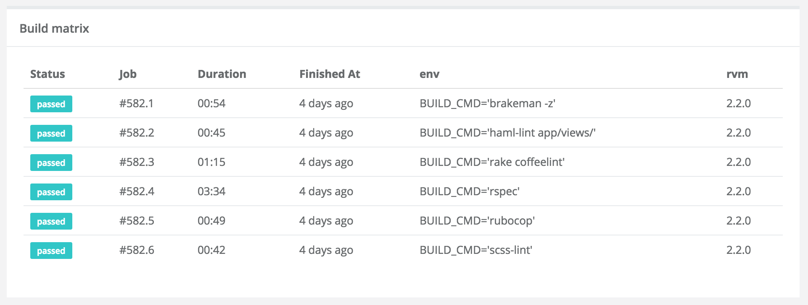
Using language versions with a matrix.
"Matrix" and "language versions" approaches can be combined. A resulting build will be containing versions_num * matrix_size jobs.
Example:
env:
matrix:
- TEST_SUITE=test
- TEST_SUITE=cucumber
rvm:
- 2.2
- 2.1
- 2.0 And the result is:
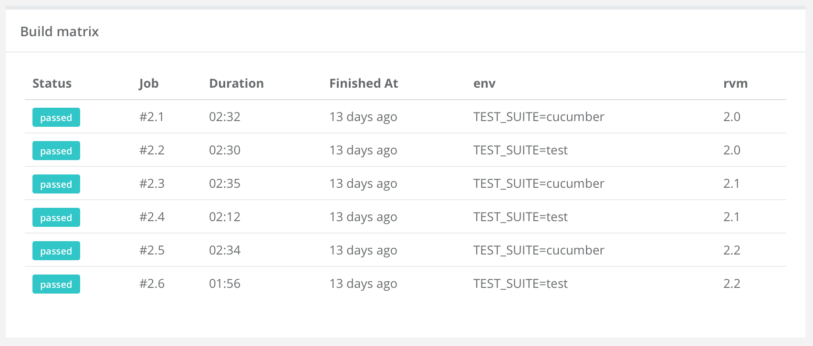
Parallel Rspec
There's another option for Rails users. You can specify a number of parallel jobs and set script to parallel_rspec to run automatically Rspec jobs in parallel.
parallel: 4
script: parallel_rspec
Deploiyng your application
Soon.
- Capistrano examples
- Ansible examples
SSHing into a build
Soon.
Billing
Soon.
FAQ
Soon.